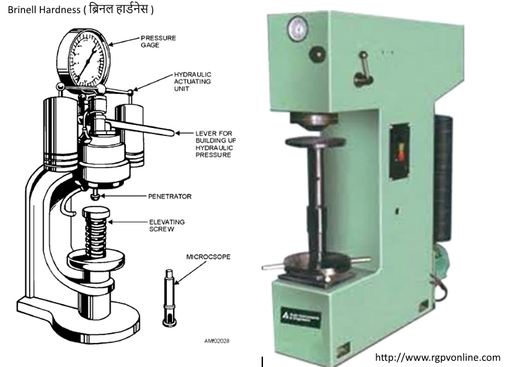

Q. Describe Brinell hardness test with the help of a neat sketch.
ब्रिनल हार्डनेस टेस्ट को सचित्र समझाइये।
Answer : Brinell Hardness Test
The ability of a material to resist indentation or penetration is called Hardness. To test the hardness of any material is simply forcing an indentor into the surface of the metal by applying the load. There are different methods are developed to test this hardness. In this article, we are going to discuss one of the hardness testing method called Brinell Hardness Test.
Brinell hardness test consists of indenting(Trying to make a notch) to the surface of the metal by a hardened steel ball under load.
The indenter will be locked on the upper head of the Brinell hardness testing machine as shown in fig.

Image "Brinell Hardness Test"
The load will be applied with the help of the Lever system on to the specimen as shown in the fig.
As the load applied on the upper head with the indenter on to the spacemen, there will be an indent on the specimen.
The principle of the Brinell hardness test is that the hardened steel ball is used as the indenter. It is pressed into the specimen to make the indent in the specimen by applying load.
The hardness of the specimen will be determined from the Brinell Hardness number.
Brinell Hardness number = Load/ Curved surface area of the indentation.Brinell Hardness Test
The size of the ball will be dependent on the material. For example steel, we will go for the 10mm diameter ball with the applied load of the 3000 kg.
For Copper, we will go for the 10mm diameter ball with the applied load of the 1000 kg.
For Copper, we will go for the 10mm diameter ball with the applied load of the 500 kg.
And one of the important thing in the Hardness testing is that the time of loading is also an important factor.
10-15 seconds for ferrous materials and 30 sec for Non- Ferrous materials.
Limitations of Brinell Hardness Test
Due to Indent on the specimen or the testing component, this method is not suitable for the Finished products.
The deformation of the Steel ball is not allowed, so we can be only testing the materials which are having a low or medium hardness only.